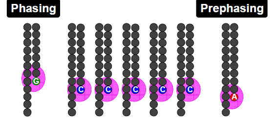

There are several second generation sequencers currently on the market. These include the Ion Torrent, and many Illumina system. Other (now obsolescent) platforms included Life Tech SoLID and Roche 454. All of these systems rely on making hundreds of thousands of clonal copies of a fragment of DNA and sequencing the ensemble of fragments using DNA polymerase or in the case of the SOLiD via ligation. This is simply because the detectors (basically souped-up digital cameras), cannot detect fluorescence changes from a single molecule.
The ‘third-generation’ Pacific Biosciences SMRT (Single Molecule Real Time) Sequel sequencers are able to detect fluorescence from a single molecule of DNA. However, the machines are very large and produce less than a tenth of the data of an Illumina MiSeq run and for long reads > 0kb error rates are generally around 10-12%.
The Oxford Nanopore MinION is another ‘third-generation’ single-molecule system which measures changes in electrical current through a Nanopore as a single molecule is ratcheted through it. Although error rates are higher (5-10%) and per-base costs are higher the technology has improved rapidly and will probably replace second generation systems over the next few years. Currently however, the second generation sequencers are dominating the sequencing world.
We will mainly look at the Illumina sequencing pipeline here, but the basic principles apply to other second-generation sequencers. If you would like further details on other platforms then I recommend reading:
Mardis ER. Next-generation DNA sequencing methods. Annual Reviews Genomics Hum Genet 2008; 9 :387-402.
Goodwin S. Coming of age: ten years of next-generation sequencing technologies. Nat Rev Genet. 2016; 17:333-51.
A typical sequencing run would begin with the user supplying 1ng - 1ug of genomic DNA to a facility along with quality control information in the form of an automated electrophoresis output (e.g. Agilent Bioanalyser/Tapestation trace) or gel image and quantification information.
For most sequencing applications, paired-end libraries are generated. Genomic DNA is sheared into 300-800 bp fragments (usually via sonication) and size-selected accordingly. Ends are repaired and an overhanging adenine base is added, after which oligonucleotide adaptors are ligated. In many cases the adaptors contain unique DNA sequences of 6-12bp which can be used to identify the sample if they are ‘multiplexed’ together for sequencing. This type of sequencing is used extensively when sequencing small genomes such as those of bacteria because it lowers the overall per-genome cost.
A) Steps a through e explain the main steps in Illumina sample preparation. B) Overview of the automated the size selection protocol.
*Borgstrom E, Lundin S, Lundeberg J, 2011 Large Scale Library Generation for High Throughput Sequencing. PLoS ONE 6:e19119. doi:10.1371/journal.pone.0019119 *
adapted from: (Next-Generation DNA Sequencing Methods Mardis, E.R. Annu. Rev. Genomics Hum. Genet. 2008. 9:387-402)
Once sufficient libraries have been prepared, the task is to amplify single strands of DNA to form monoclonal clusters. The single molecule amplification step for the Illumina HiSeq 2500 starts with an Illumina-specific adapter library and takes place on the oligo-derivatized surface of a flow cell, and is performed by an automated device called a cBot Cluster Station. The flow cell is either a 2 or 8 channel sealed glass microfabricated device that allows bridge amplification of fragments on its surface, and uses DNA polymerase to produce multiple DNA copies, or clusters, that each represent the single molecule that initiated the cluster amplification.
Separate or multiple libraries can be added to each of the eight channels, or the same library can be used in all eight, or combinations thereof. Each cluster contains approximately one million copies of the original fragment, which is sufficient for reporting incorporated bases at the required signal intensity for detection during sequencing.
The Illumina system utilizes a sequencing- by-synthesis approach in which all four nucleotides are added simultaneously to the flow cell channels, along with DNA polymerase, for incorporation into the oligo-primed cluster fragments (see figure below for details). Specifically, the nucleotides carry a base-unique fluorescent label and the 3 -OH group is chemically blocked such that each incorporation is a unique event.
An imaging step follows each base incorporation step, during which each flow cell lane is imaged in three 100-tile segments by the instrument optics at a cluster density of 600,000-800,000 per mm2. After each imaging step, the 3’ blocking group is chemically removed to prepare each strand for the next incorporation by DNA polymerase. This series of steps continues for a specific number of cycles, as determined by user-defined instrument settings, which permits discrete read lengths of 50-300 bases. A base-calling algorithm assigns sequences and associated quality values to each read and a quality checking pipeline evaluates the Illumina data from each run.
The figure below summarises the process:
The Illumina sequencing-by-synthesis approach: Cluster strands created by bridge amplification are primed and all four fluorescently labelled, 3-OH blocked nucleotides are added to the flow cell with DNA polymerase. The cluster strands are extended by one nucleotide. Following the incorporation step, the unused nucleotides and DNA polymerase molecules are washed away, a scan buffer is added to the flow cell, and the optics system scans each lane of the flow cell by imaging units called tiles. Once imaging is completed, chemicals that effect cleavage of the fluorescent labels and the 3 -OH blocking groups are added to the flow cell, which prepares the cluster strands for another round of fluorescent nucleotide incorporation.
Base-calling involves evaluating the raw intensity values for each fluorophore and comparing them to determine which base is actually present at a given position during a cycle. To call bases on the Illumina HiSeq or SOLiD platform, the positions of clusters need to be identified during the first few cycles. This is because they are formed in random positions on the flowcell as the annealing process is stochastic. This is in contrast to the 454 system and later Illumina models where the position of each cluster is defined by a manufactured pattern in which the reaction takes place.
If there are too many clusters, the edges of the clusters will begin to merge and the image analysis algorithms will not be able to distinguish one cluster from another (remember, the software is dealing with upwards of half a million clusters per square millimeter - that’s a lot of dots!).
The above figure illustrates the principles of base-calling from cycles 1 to 9. If we focus on the highlighted cluster, one can observe that the colour (wavelength) of light observed at each cycle changes along with the brightness (intensity). This is due to the incorporation of complementary ddNTPs containing fluorophores. So at cycle 1 we have a T base, at 2 a G base and so on. If the colour or intensity is ambiguous the sequencer will mark it as an N. Other clusters are also visible in the images; these will represent different monoclonal clusters with different sequences.
The base calling algorithms turn the raw intensity values into T,G,C,A or N base calls. There are a variety of methods to do this and the one mentioned here is by no means the only one available, but it is often used as the default method on the Illumina systems, and will only call a base if the intensity divided by the sum of the highest and second highest intensity is less than a given threshold (usually 0.6). Otherwise the base is marked with an N. In addition the standard Illumina pipeline will reject an entire read if two or more of these failures occur in the first 4 bases of a read (it uses these cycles to determine the boundary of a cluster).
These processes are carried out at the sequencing facility and you will not need to perform any of these tasks under normal circumstances. They are explained here as useful background information.
Paired-end sequencing is a remarkably simple and powerful modification to the standard sequencing protocol. It is nearly always worth obtaining paired-end reads if performing genomic sequencing. Typically sequencers of any type are only able to sequence a portion of DNA (typically 125bp in the case of Illumina) before the fidelity of the enzyme and de-phasing of clusters (see later) increase the error rate beyond tolerable levels. As a result, on the Illumina system, a fragment which is 500bp long will only have the first 125bp sequenced.
If the size selection is tight enough and you know that nearly all the fragments are close to 500bp long, you can repeat the sequencing reaction from the other end of the fragment. This will yield two reads for each DNA fragment separated by a known distance. In the figure below the dashed regions represent the complete DNA fragment and the solid lines the regions we are able to sequence:
The added information gained by knowing the distance between the two reads can be invaluable for spanning repetitive regions. In the figure below, the light coloured regions indicate repetitive sections of DNA. If a read contains only repetitive DNA, an alignment algorithm will be able to map the read to many locations in a reference genome. However, with paired-end reads, there is a greater chance that
at least one of the two reads will map to a unique region of DNA. In this way one of the reads can be used to anchor the other read in the pair and help resolve the repetitive region. Paired-end reads are often used when performing de-novo genome sequencing (i.e. when a reference is not available to align against) because they enable contiguous regions of DNA to be ordered, or when characterizing variants such as large insertions or deletions.
Other forms of paired-end sequencing with much larger distances (e.g. 10kb) are possible with so called ‘mate-pair’ libraries. These are usually used in specific projects to help order contigs in de-novo sequencing projects. We will not cover them here, but the principles behind them are similar.
No measurement is without a certain degree of error. This is true in sequencing. As such there is a finite probability that a base will not be called correctly. There are several possible sources:
Frequency cross-talk and normalisation errors:
When reading an A base, a small amount of C will also be measured due to frequency overlap and vice-versa. Similarly with G and T bases. Additionally, from the figure below, it should be clear that the extent to which the dyes fluoresce differs. As such it is necessary to normalize the intensities. This normalisation process can also introduce errors.
Frequency response curve for A and C dyes
(Intensity y-axis and frequency on the x-axis) **
Phasing/Pre-phasing:
his occurs when a strand of DNA lags or leads the other DNA strands within a cluster. This introduces additional background noise into the signal and reduces the intensity of the true base. In the example below we have a cluster with 7 strands of DNA (very small, but this is just an example). Five strands are on a C-base, whilst 1 is lagging behind (called phasing) on a G base and the remaining strand is running ahead of the pack (confusingly called pre-phasing) on an A base. As such the C signal will be reduced and A and G boosted for the rest of the sequencing run. Too much phasing or pre-phasing (i.e. > 15-20%) usually causes problems for the base calling algorithm and result in clusters being filtered out.

Biases introduced by sample preparation - your sequencing is only as good as your experimental design and DNA extraction. Remember that your sample will be put through several cycles of PCR before sequencing which is also introduces a potential source of bias.
High AT or GC content sequences - reduces the complexity of the sequence and can result in higher error rates.
Homopolymeric sequences - long stretches of a single base can make it difficult to determine phasing and pre-phasing rates. This can introduce errors in determining the precise length of a hompolymeric stretch of sequence. This much more of a problem on the 454 and Ion Torrent than Illumina platforms but still worth bearing in mind. Especially if you encounter indels which have been called in homopolymeric tracts.
Certain motifs can cause loops and other steric clashes See Nakamura et al, Sequence-specific error profile of Illumina sequencers Nuc. Acid Res. first published online May 16, 2011 doi:10.1093/nar/gkr344
To account for the possible errors and provide an estimate of confidence in a given base-call, the Illumina sequencing pipeline assigns a quality score to each base called. Most quality scores are calculated using the Phred scale. Each base call has an associated base call quality which estimates the chance that the base call is incorrect.
Q10 = 1 in 10 chance of incorrect base call
Q20 = 1 in 100 chance of incorrect base call
Q30 = 1 in 1000 chance of incorrect base call
Q40 = 1 in 10,000 chance of incorrect base call
For most 454, SOLiD and Illumina runs you should see quality scores between Q20 and Q40. Note that these as only estimates of base-quality based on calibration runs performed by the manufacturer against a sample of known sequence with (typically) a GC content of 50%. Extreme GC bias and/or particular motifs or homopolymers can cause the quality scores to become unreliable.
Accurate base qualities are an essential part in ensuring variant calls are correct. As a rough and ready rule we generally assume that with Illumina data anything less than Q20 is not useful data and should be excluded from the analysis.
Some reads will contain adaptor sequences after sequencing, usually at the end of the read. This is usually because of short sample DNA fragments, which result in the polymerase reading into the adaptor region. Occasionally this can also happen because of mis-priming. It is important to remove or trim sequences containing these reads as the adaptor sequences can prevent reads mapping to a reference sequence and will adversely affect de-novo assembly